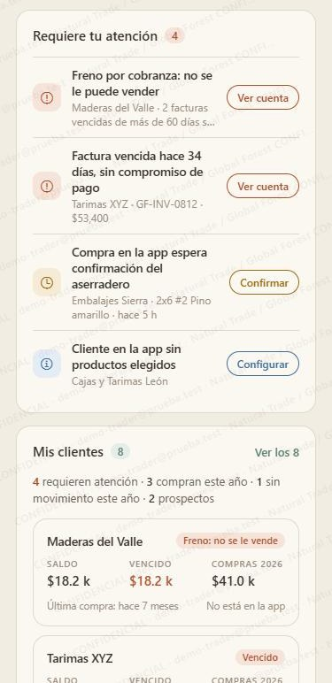
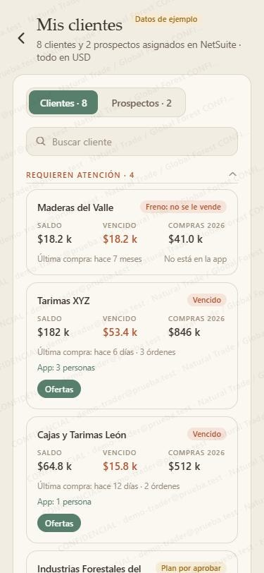
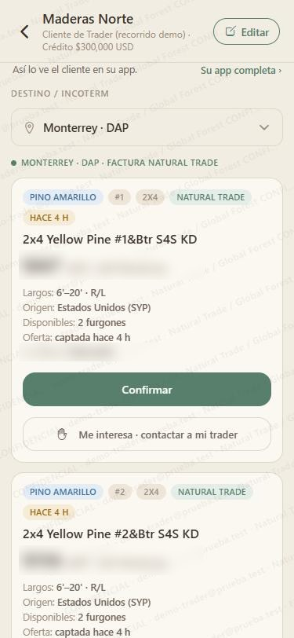
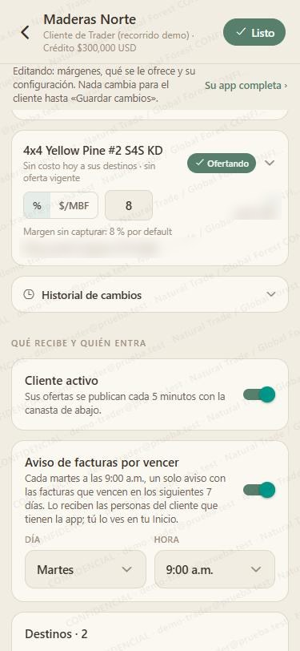
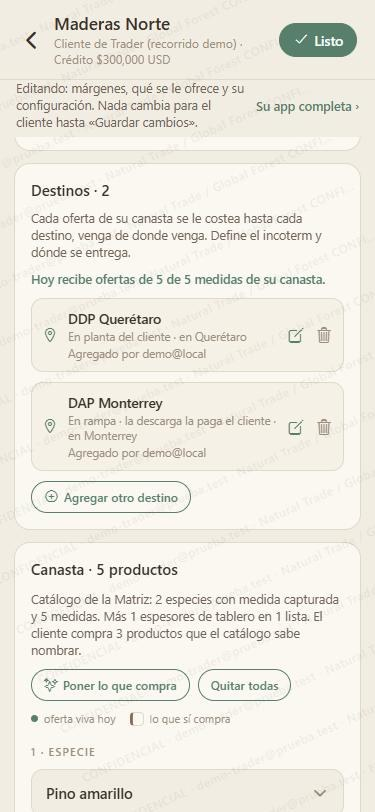
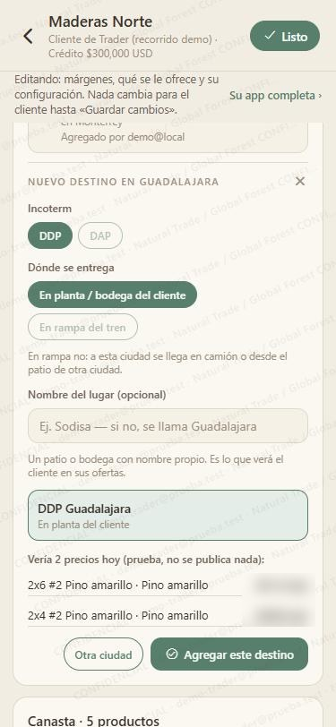
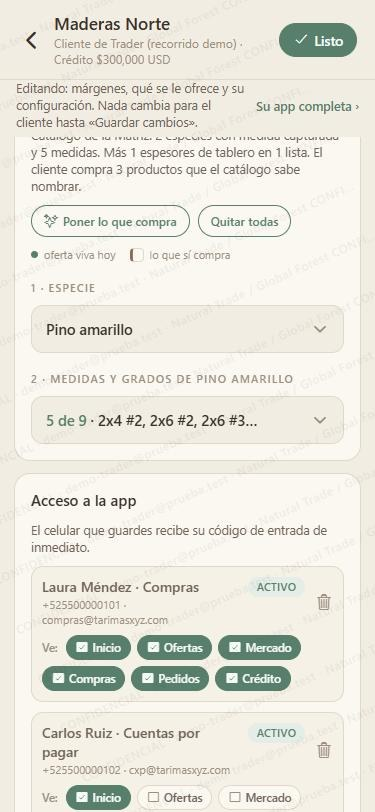
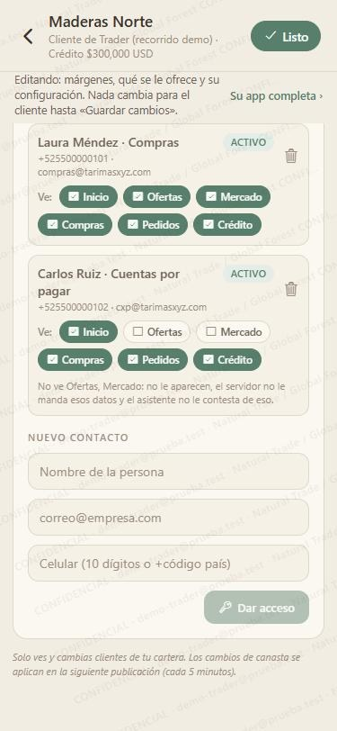

Guías de la NT App
Guías de la NT App
Activa las ofertas de tu cliente
Tu cliente solo ve ofertas cuando tiene cuatro cosas listas. Si le falta una, entra a la app y no ve nada. Con esta guía lo dejas listo en unos 5 minutos.
Encuentra a tu cliente
Dos caminos, el que te quede más cerca:
- En tu Inicio, en Requiere tu atención, toca Configurar junto al cliente. Ahí la app ya te dice qué le falta.
- O ve a Mis clientes → Ver los…, busca al cliente y toca Ofertas.


Toca «Editar»
La pantalla abre como la ve tu cliente («Así lo ve el cliente en su app»). Toca Editar arriba a la derecha para cambiar su configuración.
Si llegaste por Configurar, ya abre en modo edición.

Prende «Cliente activo»
Baja hasta Qué recibe y quién entra y prende Cliente activo. Se guarda solo, al momento.
Abajo puedes dejar prendido el Aviso de facturas por vencer: un solo aviso a la semana para tu cliente.

Agrega su destino
- En Destinos, toca Agregar otro destino y elige la ciudad.
- Elige el incoterm: DDP o DAP.
- Elige dónde se entrega: en su planta o bodega, o en rampa del tren.
- Toca Ver precios de prueba: te enseña cuántas ofertas vería hoy, sin publicar nada.
- Si se ve bien, toca Agregar este destino.


Arma su canasta
- En Canasta, toca Poner lo que compra: la llena con lo que tu cliente ya te ha comprado.
- Revisa la especie y las medidas. Agrega o quita lo que haga falta.
- Toca Guardar canasta (aparece en cuanto cambias algo).
El punto verde marca las medidas con oferta viva hoy; el café, lo que sí compra.

Revisa quién tiene acceso
En Acceso a la app ves a cada persona del cliente y qué secciones ve. Si nadie tiene acceso, o falta quien compra:
- En Nuevo contacto, escribe nombre, correo y celular.
- Toca Dar acceso. Le llega su código de entrada de inmediato.

Comprueba que ya ve ofertas
Toca Listo arriba: la pantalla vuelve a «Así lo ve el cliente en su app». Las ofertas se publican cada 5 minutos; si todavía no aparecen, espera un momento y vuelve a abrir.
Si cambiaste márgenes o qué se le ofrece, abajo aparece Guardar cambios: nada cambia para el cliente hasta que lo toques.
Las capturas son de la versión de demostración de la NT App: clientes, contactos y cifras de ejemplo, no reales. Natural Trade · Global Forest. Todas las guías.